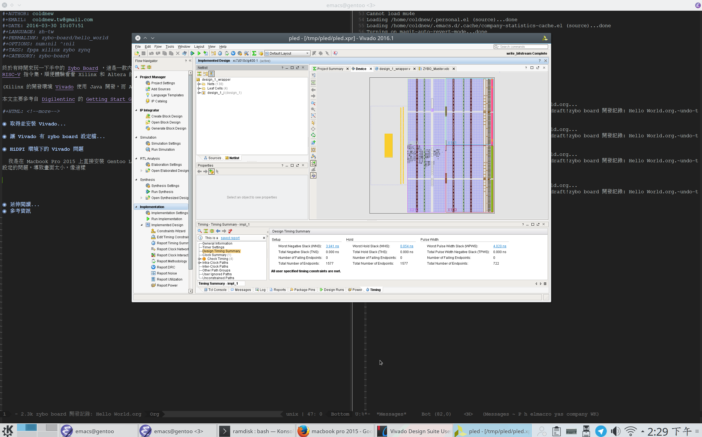
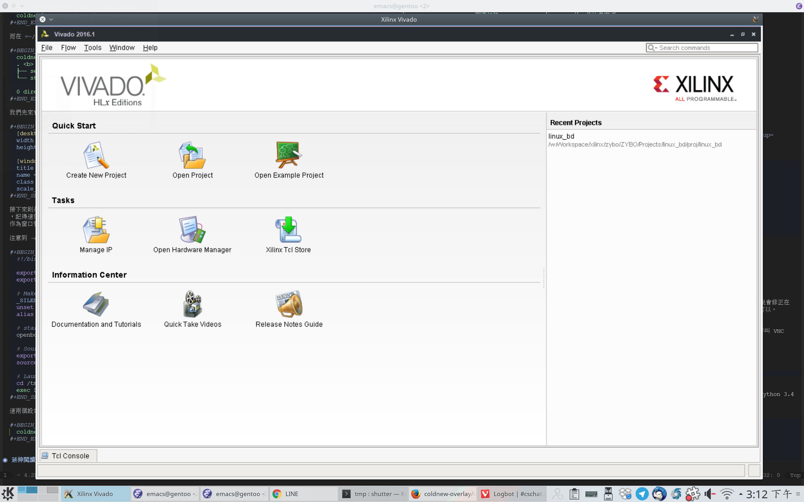

在使用 Xilinx 的開發環境 Vivado 2016.1 有遇到一些問題，特別紀錄之。
(Xilinx 的開發環境 Vivado 使用 Java 開發，而 Altera 的 Quartus 使用 Qt 開發，以我遇到的狀況來說，後者在 Linux 上的體驗好多了。)
安裝 Vivado 在其他的 Linux 平台
Vivado 安裝程式在非官方支援的 Linux 平台上可能會導致安裝出問題，以我的 Gentoo Linux 為例，我必須把解壓出的 xsetup 安裝腳本裡面的這部分修改掉，不然會在 64bit 並具有 32bit 函式庫的 Gentoo Linux 下安裝失敗。
# ERROR out if this installation is running on 32 bit OS # and does not support 32 bit installation if [ "$(uname -i)" != "x86_64" ]; then # check that the 32 bit library directory exist or not lnx32LibDir="${workingDir}/lib/lnx32.o" if [ ! -d $lnx32LibDir ]; then # terminate with an ERROR echo "ERROR: This installation is not supported on 32 bit platforms." exit 1 # <----- NOTE: Just remove this line if your linux is 64-bit system fi fi
讓 Linux 辨識 USB UART
如果你接上 USB 到 Zybo Board 的 USB UART 接腳，卻沒在你的 Linux 上面看到任何 /dev/ttyUSB* 被建立的話，那就是你少裝了一些 UDEV rule，這邊的說明可以在 Vivado Design Suite User Guide 找到，簡單的說….
假設你的 vivado 安裝在 /opt/Xilinx/Vivado/2016.1 的話，我們可以透過以下程式來安裝 udev 設定。
/opt/Xilinx/Vivado/2016.1/data/xicom/cable_drivers/lin64/install_script/install_drivers/install_digilent.sh
HiDPI 環境下的 Vivado 問題
我是在 Macbook Pro 2015 上直接安裝 Gentoo Linux 來執行 Vivado, 因此會遇到顯示出來的 Vivado 程式因為 DPI 設定的問題，導致畫面太小，像這樣

這問題的元兇是 Oracle JDK 使用 Java Swing 時，在 Linux 上並未支援 HiDPI 解析度，導致出現的畫面太小，這 問題 據說會修正在 JDK 9 上，目前我們只能用一些臨時解 (workround)來處理這狀況，或是將 Vivado 視窗移動到解析度沒那樣好的外接螢幕上也可以。
針對 HiDPI 下，我採用的另外一種解決方案是使用 vncdesk 來協助我們透過 VNC 協定對特定的程式進行視窗的縮放功能，該程式會在背景啟動一個 VNC 伺服器，然後在根據我們的設定啟動我們需要的程式，接著呼叫 VNC Client 並進行畫面縮放來達到我們的要求。
在 Gentoo Linux 上，你可以透過我寫好的 ebuild 來安裝 vncdesk
coldnew@gentoo ~ $ sudo emerge app-misc/vncdesk
另外要注意到的是，vncdesk 只支援 Python 3.x，因此你也需要將系統的 python 版本切換到 3.x 系列，這邊我將它切換到 Python 3.4 去。
coldnew@gentoo ~ $ sudo eselect python list Available Python interpreters, in order of preference: [1] python2.7 [2] python3.4 [3] python3.5 (fallback) coldnew@gentoo ~ $ sudo eselect python set 2
完成後，接下來我們要建立一些設定檔案，我們首先先建立 ~/.vncdesk 資料夾
coldnew@gentoo ~ $ mkdir -p ~/.vncdesk
假設我們要使用 DISPLAY=:21 來作為 Vivado 顯示用的位置的話，我們要建立 ~/.vncdesk/21 這樣的資料夾
coldnew@gentoo ~ $ mkdir -p ~/.vncdesk/21
而在 ~/.vncdesk/21 則要再建立以下兩個檔案
coldnew@gentoo ~/vncdesk/21 $ tree . . <b> ├── settings.ini └── startup <g> 0 directories, 2 files
我們先來看 settings.ini 這個檔案，這是 vncdesk 最主要的設定，裡面包含了你要建立的視窗名稱、大小以及縮放度
[desktop] width = 1280 height = 800 [window] title = Xilinx Vivado name = vivado in vncdesk class = FigInVncdesk scale_factor = 1.8
接下來則是我們執行程式用的腳本 startup ，記得這個檔案需要加上執行權限，在這份檔案中，我們先設定幾個環境變數，接著由於可能會有多視窗的需求，因此啟用 openbox 1 作為窗口管理程式，最後則是啟動 vivado 這隻程式。
注意到 export SWT_GTK3=0 這個設定，待會會解釋它到底會有啥影響，總之先照著設定就是了。
#!/bin/sh export LC_ALL=C export SWT_GTK3=0 # Fix annoying error on Xilinx SDK # Make java application look more nice _SILENT_JAVA_OPTIONS="-Dawt.useSystemAAFontSettings=on -Dsun.java2d.xrender=true -Dswing.aatext=true" unset _JAVA_OPTIONS alias java='java $_SILENT_JAVA_OPTIONS' # start window manager openbox & # Source vivado env before launch export TARGET_DIR=/opt/Xilinx/Vivado/2016.1 source $TARGET_DIR/settings64.sh # Launch Vivado cd /tmp exec $TARGET_DIR/bin/vivado
這兩個設定都建立好以後，我們就可以用以下命令去執行畫面有縮放過的 Vivado 程式
coldnew@gentoo ~ $ vncdesk 21
顯示的畫面會變成這樣，在 HiDPI 的環境下也就清楚多了

一定要設定 export SWT_GTK3=0
在上面我們說了要設定 SWT_GTK3=0 ，如果不設定的話，很容易出現問題，以我遇到的狀況來講，我在 Xilinx SDK 想要建立 Zynq Boot Image，但是視窗卻不會給我彈出來
如果你設定了 SWT_GTK3=0 後在啟動 Xilinx SDK，這問題就不見囉 = =|||